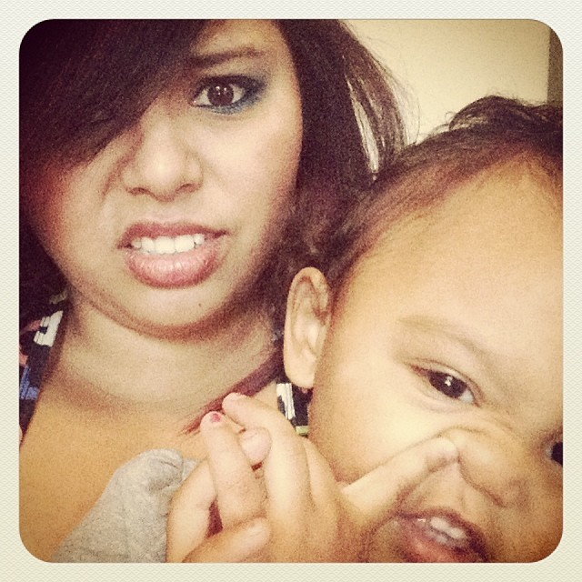

Hey!!! I'm Traci Reed. I am 25 years old. I was born and raised in the Pacific Northwest. I have my AA degree in Arts, major was Visual Art. I have had that "artistic touch" as long as I can remember. My mom has TONS of old drawings from me growing up. I took Drawing and two years of Advanced drawing in High School. As well as Drawing I & II, Advanced Drawing, Human Figure Drawing I & II, as well as some Art History classes in college. I got into tattooing after high school because one of my talents is being able to look at something then duplicate it. It has been a fun hobby for the last 7 years. I, like most women, have a little bit of an obsession with Pinterest.com and am always looking for new, fun DIY projects. Don't worry I have my fair of 'pinterest fails' too. But I would have to say my greatest masterpiece I have ever created is my beautiful 3 year old daughter, Kiana Marie.
I just recently decided to started going to Portland Code School in hopes to start a new career path. I have only been in school since the begining of March, so I don't have anything worthy of being posted yet. In fact this website you are looking at now was designed by yours truely! But don't worry, I will have plenty of new stuff coming once I get the hang of things!